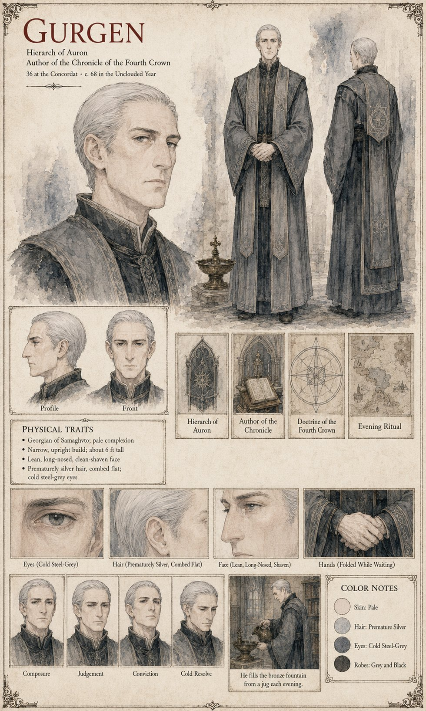

Gurgen
Hierarch of Auron, the Father’s college · author of the Chronicle of the Fourth Crown · 36 when the Council first sits
A narrow, prematurely silver man of thirty-six, a widower, the Hierarch of Auron is said to be incapable of sleep except to the sound of running water, and so keeps a small bronze fountain in the sleeping room of his lodging and fills it himself each evening from a jug. He was cold in the way that clean things are cold; the manuscript adds that this would be the principal reason people trusted him and the principal reason they were wrong to. When the three Hierarchs take the Hall of Oaths for the Council of the Quiver it is he who proposes its new name, the Hall of the Unstrung Bow, and when the thirteen arrows are to be shared out it is he who observes, folding his hands, that thirteen “is not a number the gods were consulted on”. His family’s seat is Ghedani, which allows him to say, without lying, that he holds no arrow himself.
He sees so far, and no farther. In the thirteenth year he pronounces the plain of Orvaneti guilty from the temple steps, because the Father’s justice is easier to administer than the Son’s apology. In the fourteenth, when the Memorandum on Proportion is laid before him, he understands within a page what he has done and files it, with great courtesy, in the long cedar drawer at the north end of the Hall; in the twenty-first he presides over the killing frost himself and speaks against nothing. At the Mercy Vote it is he who proposes that the one who asks be the one who draws, so that the Sword’s own king will carry the weight of it. When the Mother’s valleys move to void Ketevan’s voice, he does nothing and says nothing until their anger has made its own enemies, and then leans toward Warden Bidzina of Orsani and murmurs that the Sword will soon be needing something to hold the Hall with. He brings the king Orsani’s arrow himself, wrapped in the colours of Auron, a gift whose terms have been left to the receiver’s imagination, with a slim folio tied in grey cord. The hail he watches from the roof of his own temple with a basin of water at his feet, and has his college enter it as the Father’s Judgment. After the burning of three arrows at Kharzeni, on the first of Havren, he has the three Wardens whom the king declined to hang, Levan, Shalva and Archil, hanged in the Hall of Oaths under the Father’s justice, for the breach of an oath. He knows that Archil’s point is sound, that an oath sworn to a Council cannot be broken once the Council is dead, and reads the sentence in the level voice regardless, because a Hierarch who found a lawyer correct in public would be obliged to find the next one correct as well; the king is in the field that morning, and would never be entirely able to say that he had not known.
It is Gurgen’s doctrine, that the arrows answer neither god but whoever holds the bow, and that above the three crowns stands a fourth, unclaimed, that gives the king his title. He chooses the day for its crowning, the Uncounted Day at the end of the thirty-first year, and drafts the nine-word closing formula for the Rite, While the Crown reigns, let the sky keep faith. He has read the Memorandum eleven times; it does not occur to him that a king’s picture might take a prayer in. When the Testing begins and three letters come down from Ormeli in Ketevan’s small, hard hand, asking the king to come down from his sum, he opens each of them first, files it in the cedar drawer, and tells himself that a Testing is not shortened at the request of the tested. He did not call it suppression. He called it the Crown’s business. In the third month a rationing order that he has himself signed takes his fountain from him, and he sits the nights through on the cold basalt of the Hall with the empty bronze basin in his lap, listening to the silence of a sky that he had arranged, and tells nobody; he had never told anybody anything. On the morning of the first rain he lies down in the dry basin and is asleep before the first gutter runs, and wakes at noon of the next day, a man absolved of nothing. In the six years left to him he writes the Chronicle of the Fourth Crown, in a hand so steady that it is a century before anyone notices it contains no dates. It credits the affair to the wisdom of the Four-Crowned King and the ingratitude of the Mother’s valleys, and does not mention a fletcher, a dog, a field of barley, or the words only a little; nowhere in its first eleven hundred pages, or in any of the sixty-one volumes of commentary that follow, is it recorded that what began the war was a nine-year-old girl who wanted a small rain for a panting dog.
The manuscript gives his age of thirty-six, his silver hair, his widowhood, the fountain, the cold, the folded hands and the colours of Auron. The sheet’s age of about 68 in the Unclouded Year (36 at the Concordat), narrow upright build of about 6 ft, pale complexion, lean, long-nosed, clean-shaven face, hair combed flat, cold steel-grey eyes and long robes in grey and black are its own, as are its panels Composure, Judgement, Conviction and Cold Resolve and its small tiles Hierarch of Auron, Author of the Chronicle, Doctrine of the Fourth Crown and Evening Ritual. Its scene, He fills the bronze fountain from a jug each evening, follows the manuscript.
“He did not call it suppression. He called it the Crown’s business.”